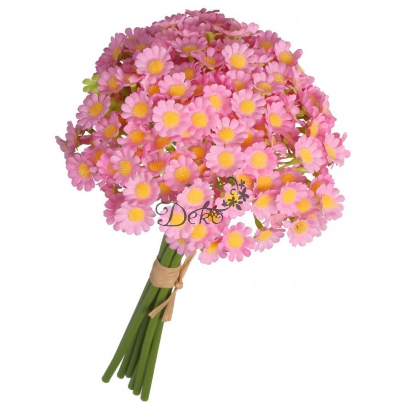
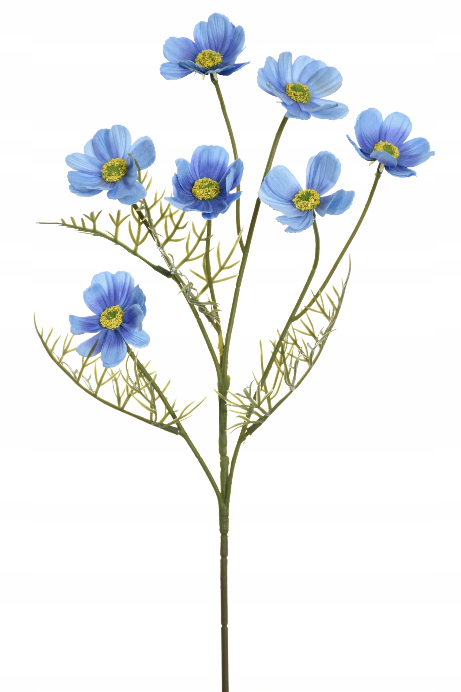
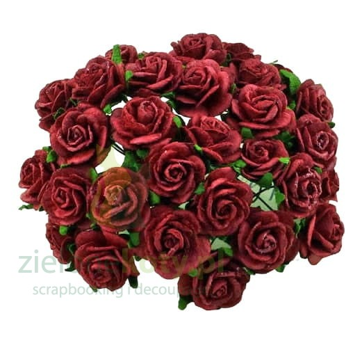

strona główna



wiat – organ roślin nasiennych, w którym wykształcają się wyspecjalizowane elementy służące do rozmnażania. Stanowi fragment pędu o ograniczonym wzroście ze skupieniem liści płodnych i płonnych, służących odpowiednio, bezpośrednio i pośrednio do rozmnażania płciowego (generatywnego). Kwiat charakterystyczny dla roślin nasiennych (czyli kwiatowych) jest organem homologicznym do kłosa zarodnionośnego (sporofilostanu) roślin ewolucyjnie starszych.
kacper babinek
kontakt
strona główna
galeria
kontakt